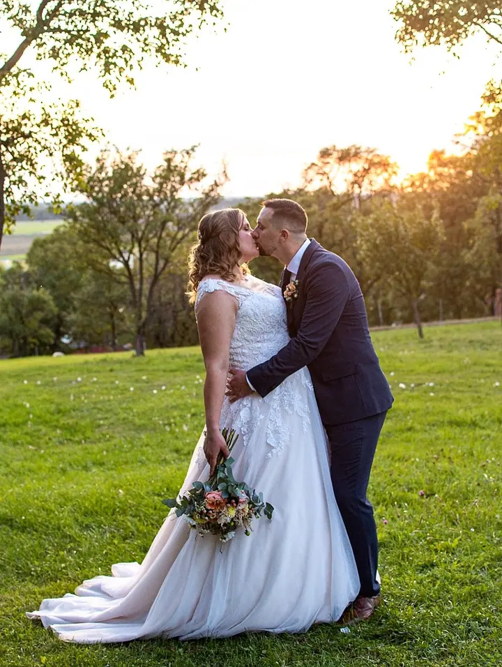
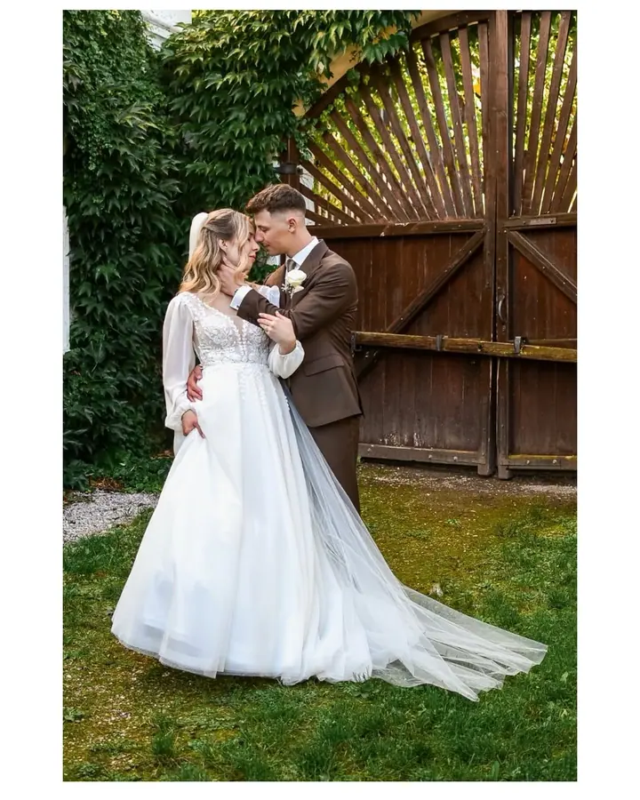
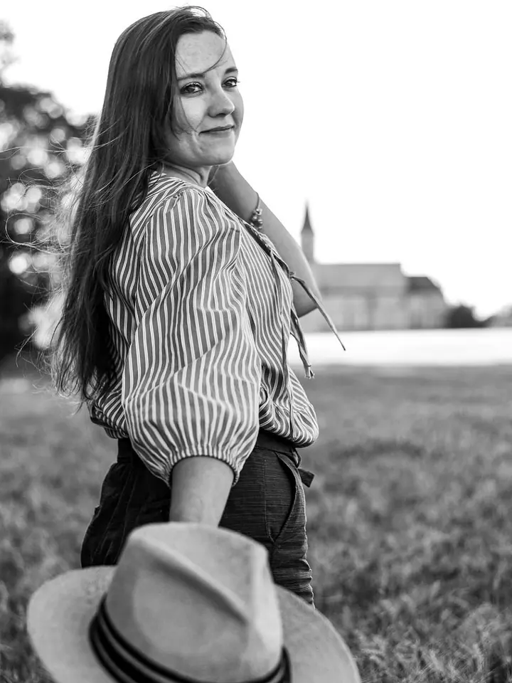

jedna
Svatební příběhy
Svatební den fotím v balíčcích na 3, 6 nebo 10 hodin a v každém je i předsvatební schůzka s focením, abychom se ve velký den už znali. Když mě máte na svatbě, zapůjčím vám zdarma dva fotoaparáty INSTAX mini 9.


Jmenuji se Petra Jeníková a fotím svatby, rodiny, páry a maminky v očekávání. V Městci Králové mám vlastní PJ foto studio, ale nejraději vyrážím fotit ven do přírody.
Více o mně
Co fotím
jedna
Svatební den fotím v balíčcích na 3, 6 nebo 10 hodin a v každém je i předsvatební schůzka s focením, abychom se ve velký den už znali. Když mě máte na svatbě, zapůjčím vám zdarma dva fotoaparáty INSTAX mini 9.
dvě
Klidné focení pro vás dva v době, kdy čekáte miminko, nebo jen tak, pro radost. Na tematické focení mám dekorace, plátna i doplňky.
tři
Portréty v přírodě i v PJ foto studiu v Městci Králové, v barevné i černobílé verzi. Mám ráda i tematická focení, třeba ve vodě s růžemi.
Klasické focení venku trvá 30 až 45 minut a dostanete z něj 8 upravených fotografií, každou v barevné i černobílé verzi. Fotit můžeme venku nebo v ateliéru.
Alespoň na chvilku zastavíme čas.
Za objektivem
Jsem fotografka z Městce Králové a fotím hlavně svatby, rodiny, portréty, páry a těhotné. Mám k tomu vlastní ateliér, PJ foto studio, kam se můžeme schovat, když venku nepřeje počasí nebo když chcete focení s dekoracemi a plátny.
Na svatbách mi záleží na tom, abychom se znali dřív, než přijde velký den. Proto je v každém balíčku předsvatební schůzka s focením. Ve svatební den pak nemusíte být nervózní z toho, že vás fotím, a můžete si den jen užívat.
Kromě focení vám půjčím fotoaparáty INSTAX pro hosty, ráda připravím dřevěné fotoalbum a jezdím fotit i do školek. Pokud se vám něco z nabídky nehodí, domluvíme se individuálně.
Petra
Napište mi na Instagram, Facebook nebo e-mail a rovnou uveďte termín svatby a místo příprav, obřadu i hostiny.
Sejdeme se, probereme celý den a uděláme si předsvatební focení, abychom se do svatby dobře poznali.
Fotím podle balíčku, který si vyberete, tedy až 3, 6 nebo 10 hodin. Když bude potřeba, hodinu navíc domluvíme přímo na místě.
První foto vlaštovky posílám do 2 až 3 dnů, ostatní fotografie upravím do 6 až 7 týdnů. Dostanete je na USB i v online galerii pro rodinu a přátele.
Portfolio
Otázky
Pro rok 2026 začínají balíčky na 6 500 Kč za až 3 hodiny focení a 150+ fotografií. Balíček na 6 hodin stojí 11 000 Kč, na 10 hodin 16 000 Kč.
Do 30 km od Městce Králové je doprava v ceně, dál počítám 5 Kč za kilometr.
Svatební portréty můžeme nafotit i v jiný den, kdyby nevyšlo počasí nebo do dne cokoli vstoupilo. Focení trvá zhruba 45 minut.
Klasické focení na 30 až 45 minut s 8 upravenými fotografiemi stojí 1 500 Kč, tematické focení s dekoracemi 1 600 Kč. Každá fotka navíc je za 100 Kč.
Napište pár vět o tom, co si představujete. petrajenikovafoto@seznam.cz